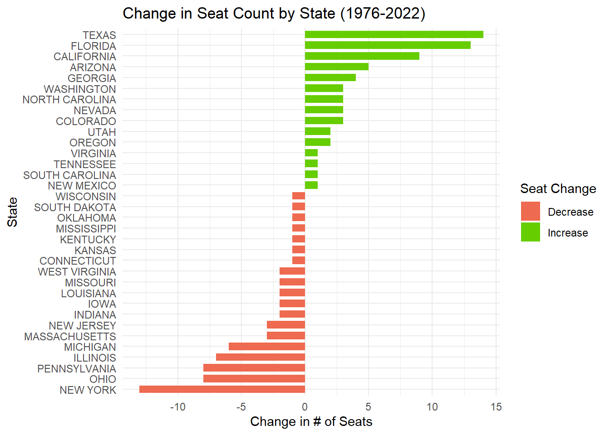
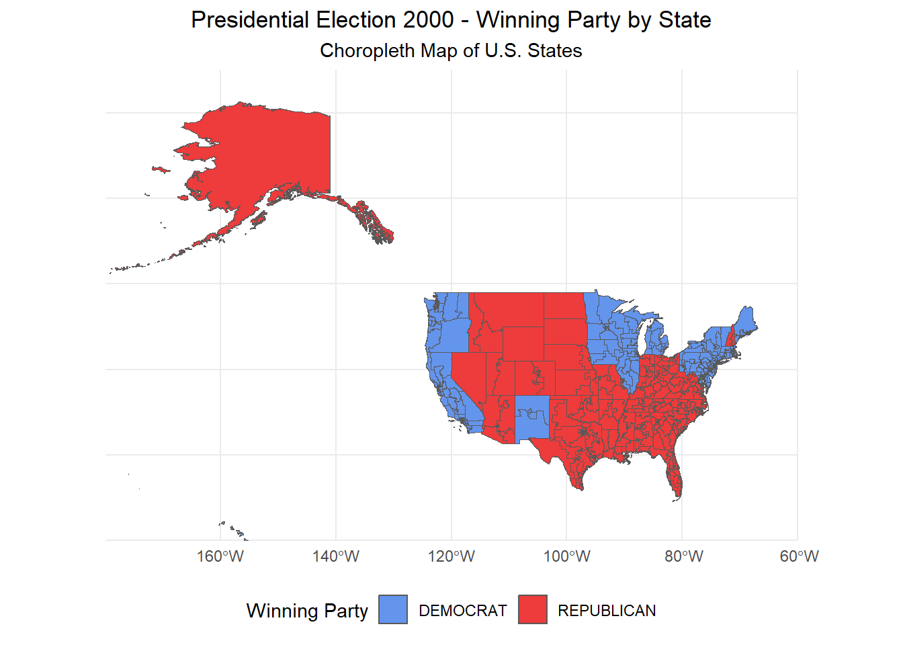
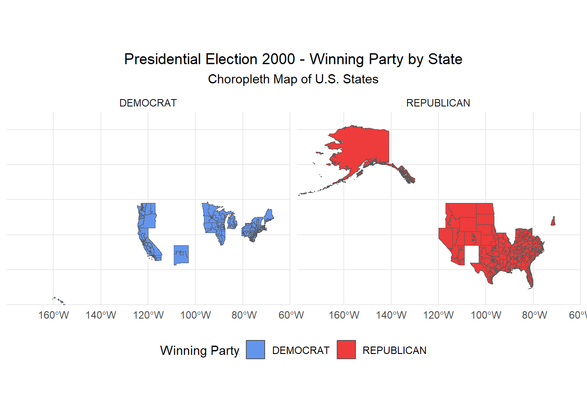

Do Proportional Electoral College Allocations Yield a More Representative Presidency?
Author
Elijah Yong
Introduction:
This project explores whether proportional Electoral College allocations would lead to a more representative presidency in the United States as winning without the majority vote doesn’t make sense. By examining historical election data, we will assess how alternative proportional allocation methods might impact election outcomes. The goal of this project is to determine whether reforms could make presidential elections more reflective of the nation’s diverse political preferences because, ideally, everyone’s vote should count, not just those in swing states.
Loading our packages:
Before we delve any further, we will have to install the necessary r packages to visualize our data and load their respective libraries into our work space.
Code
#This code installs r packages if they do not exist and we need themif (!require("tidyverse")) install.packages("tidyverse")if (!require("dplyr")) install.packages("dplyr")if (!require("ggplot2")) install.packages("ggplot2")if (!require("DT")) install.packages("DT")if (!require("sf")) install.packages("sf")#This loads our libraries into our environment library(tidyverse)library(dplyr)library(ggplot2)library(DT)library(sf)
Loading our data sets:
For our analysis in this project, we will be drawing data from three different sources.
US House/Presidential Election Votes from 1976-2022
Congressional Boundary Files from 1976-2012
Congressional Boundary Files from 2014-Present Day
Although we would love to automate the downloading process, these data sets are locked behind a user info screen that blocks us from doing so. To fix this, I manually downloaded them and used the following code to load them.
Our next data sources are shape files for all the Congressional Boundary Files from 1976-2012 which were put together by Jeffrey Lewis, Brandon DeVine, Lincoln Pritcher, and Kenneth Martis. The following code automatically downloads these shape files for us.
Code
get_shapefile <-function(district_name) {# Construct file names cmapurl1 <-"https://cdmaps.polisci.ucla.edu/shp/" zip_filename <-paste0(district_name, ".zip") shp_filename <-paste0(district_name, ".shp") shapefile_path <-file.path(district_name, "districtShapes", shp_filename)# Download and read shapefileif (!file.exists(zip_filename)) {download.file(paste0(cmapurl1, zip_filename), destfile = zip_filename) }unzip(zipfile = zip_filename, exdir = district_name)return(read_sf(shapefile_path))}# Download and store data (using a list)districtstart <-95districtend <-112for (i in districtstart:districtend) { district_name <-sprintf("districts%03d", i) district_data <-get_shapefile(district_name)assign(district_name, district_data, envir = .GlobalEnv) }
Congressional Boundary Files from 2014-Present Day:
Unfortunately, our last data set only included district boundaries up until 2012 which is a whopping 12 years ago! Luckily for us, we can utilize data from the US Census Bureau to fill in the spaces from 2014 to the present day.
Code
downloadcongress <-function(fname, year){# Construct file names BASE_URL <-sprintf("https://www2.census.gov/geo/tiger/TIGER%d/CD/", year) fname_ext <-paste0(fname, ".zip") shapefile_path <-paste0(fname, ".shp") unzip_dir <-gsub(".zip$", "", fname_ext)# Download and unzip file if we do not have itif (!file.exists(fname_ext)) {download.file(paste0(BASE_URL, fname_ext), destfile = fname_ext)unzip(fname_ext, exdir = unzip_dir) }# Read and return shapefileread_sf(file.path(unzip_dir, shapefile_path))}# Download and read district data for each yearbase_year <-2022base_congress <-116for (i in0:10) { year <- base_year - i congress <-ifelse(year >=2018, 116, ifelse(year >=2016, 115, ifelse(year >=2014, 114, ifelse(year ==2013, 113, 112)))) district_name <-sprintf("tl_%d_us_cd%d", year, congress) district_data <-downloadcongress(district_name, year)assign(district_name, district_data, envir = .GlobalEnv)}
Exploring Our Data Sets:
Now that we’ve resolved our data issue and loaded the data sets, we can now begin our analysis.
Which states have gained and lost the most seats in the House of Representatives between 1976 and 2022?
To best display this data, we can create a chart that displays change in seats by state over the period from 1976 to 2022.
Code
# This codes filters our houserep dataset for 1976/2022 and sums seatcountseatcount <- house_rep_votes |>filter(year %in%c(1976, 2022)) |>group_by(state, year) |>summarise(seat_count =n_distinct(district), .groups ="drop")# Code pivots data by making years to columns and seat counts into valuesseat_count_wide <-pivot_wider(seatcount, names_from = year, values_from = seat_count)# Code creates new column that calculates the difference in seat countseat_count_wide <- seat_count_wide |>mutate(seat_change =`2022`-`1976`) |>filter(seat_change !=0)|>arrange(desc(seat_change))# Code creates chart to give visual aid for change in seat count by stateggplot(seat_count_wide, aes(x =reorder(state, seat_change), y = seat_change, fill = seat_change >0)) +geom_col(width = .7) +scale_fill_manual(values =c("coral2", "chartreuse3"), labels =c("Decrease", "Increase"),name="Seat Change") +labs(title ="Change in Seat Count by State (1976-2022)",x ="State",y ="Change in # of Seats") +coord_flip() +theme_minimal()

Looking at this chart, we can see the Texas saw the largest increase in seats while New York lost the most. To narrow in more specifically on the numbers we can use the head and tail function.
head(seat_count_wide,1)
# A tibble: 1 × 4
state `1976` `2022` seat_change
<chr> <int> <int> <int>
1 TEXAS 24 38 14
tail(seat_count_wide,1)
# A tibble: 1 × 4
state `1976` `2022` seat_change
<chr> <int> <int> <int>
1 NEW YORK 39 26 -13
It looks like Texas gained 14 seats since 1976 and New York lost 13!
What is a fusion system? Does it change the outcome of elections?
If you live in New York, you participate in fusion voting which allows multiple political parties to endorse the same candidate. What this ultimately translates to is that a candidate can appear more than once if they are endorsed by more than one party line. While this might come off as strange, this practice enables minor parties to support major candidates while maintaining their own identities.
After learning about this system, I was interested in seeing the impact it has had on prior elections in the state. By sorting our data and comparing election winners with and without fusion voting, I was surprised see that 22 elections in NY could have flipped hands if the state hadn’t used fusion voting!
Code
#Filter for New Yorknyelection<- house_rep_votes|>filter(state=='NEW YORK')#Find the Election Winnerelection_winner <- nyelection |>group_by(year, district, candidate) |>summarize(total_votes =sum(candidatevotes), .groups ="drop")|>group_by(year, district) |>top_n(1, total_votes) |>ungroup()|>rename(Fusion_Winner = candidate )|>rename(Fusion_Votes = total_votes )#Find the Non-Fusion Election Winnernonfusionwinner <- nyelection |>filter(party %in%c("DEMOCRAT", "REPUBLICAN")) |>group_by(year, district) |>top_n(1, candidatevotes) |>ungroup() |>select(year, district, candidate,candidatevotes)|>rename(NonFusion_Winner = candidate )|>rename(NonFusion_Votes = candidatevotes )#Join tables for comparisonelectioncomparison <- election_winner |>left_join(nonfusionwinner, by =c("year", "district")) |>mutate(Different_Winner = Fusion_Winner != NonFusion_Winner)|>filter(Different_Winner =="TRUE")# Datatabledatatable(setNames(electioncomparison, c("Year", "District", "Fusion Winner", "Fusion Votes", "NonFusion Winner", "NonFusion Votes")),options =list(pageLength =10, autoWidth =TRUE),caption ="The Impact of Fusion Voting on New York House Elections")
What truly astounds me about this revelation is that 54% of potential election flips occurred in the last 18 years compared to the remaining 46% from the prior 30 years of elections. Although I won’t delve into it now, it would be interesting to look into why fusion voting has become more impactful over the last two decades. (Especially given that NY has lost 13 house seats in our timeline!)
Chloropleth Visualization of the 2000 Presidential Election
If you were wondering when we were going to start using the shape files we downloaded earlier, you no longer need to wait! By combining our presidential votes data set with our shape files, we can put together a chloropleth visualization to help us understand how elections pan out geographically. For example, we can take a look at the 2000 presidential election between George Bush and Al Gore.
Code
#This code filters out our presidential data for the year 2000 election2000map <- president_votes |>filter(year ==2000) |>group_by(state, party_simplified) |>summarize(total_votes =sum(candidatevotes), .groups ="drop") |>group_by(state) |>top_n(1, total_votes) |>ungroup() |>select(state, party_simplified) map2000 <- districts106 |>mutate(STATENAME =toupper(trimws(STATENAME))) |>left_join(election2000map, by =c("STATENAME"="state")) ggplot(map2000) +geom_sf(aes(fill = party_simplified)) +scale_fill_manual(values =c("DEMOCRAT"="cornflowerblue", "REPUBLICAN"="brown2")) +theme_minimal() +labs(title ="Presidential Election 2000 - Winning Party by State",subtitle ="Choropleth Map of U.S. States",fill ="Winning Party" ) +theme(legend.position ="bottom",plot.title =element_text(hjust =0.5),plot.subtitle =element_text(hjust =0.5) ) +coord_sf(xlim =c(-180, -60), # Adjusted to include Alaska (westward) and Hawaii (eastward)ylim =c(20, 75), # Adjusted to allow for Alaska and Hawaii's southern positionexpand =FALSE )

Advanced Chloropleth Visualization of Electoral College Results
And for a better region breakdown we can look at a faceted version of the map.
Code
ggplot(map2000) +geom_sf(aes(fill = party_simplified)) +scale_fill_manual(values =c("DEMOCRAT"="cornflowerblue", "REPUBLICAN"="brown2")) +theme_minimal() +labs(title ="Presidential Election 2000 - Winning Party by State",subtitle ="Choropleth Map of U.S. States",fill ="Winning Party" ) +theme(legend.position ="bottom",plot.title =element_text(hjust =0.5),plot.subtitle =element_text(hjust =0.5) ) +coord_sf(xlim =c(-180, -60), # Adjusted to include Alaska (westward) and Hawaii (eastward)ylim =c(20, 75), # Adjusted to allow for Alaska and Hawaii's southern positionexpand =FALSE ) +facet_wrap(~ party_simplified)

Fairness of ECV Allocation Schemes
Currently, the winner-takes-all system in most states can result in presidential candidates winning the Electoral College without securing a majority of the popular vote. By utilizing our historical election data, we can assess how alternative proportional allocation methods might change these election outcomes.
Before we can analyze the impacts of using different voting systems, we first need calculate the number of electoral votes given to each state by adding 2 to the sum of their districts.
Now that we’re ready we can take a look at the State-Wide Winner-Take-All system where each state will allocate all of its votes to the winner of the state popular vote.
Code
# This code shows candidate with most votes in statesstate_winner_take_all <- president_votes |>group_by(year,state,candidate) |>summarize(total_votes =sum(candidatevotes),.groups ="drop") |>group_by(year, state) |>top_n(1, total_votes)# combining tables with electoral votesstate_winner_take_all <- state_winner_take_all |>left_join(electoral_votes,by =c("year", "state")) |>group_by(year, candidate) |>summarize(total_ecv =sum(electoral_votes)) |>top_n(1, total_ecv)# Code Creates datatabledatatable(setNames(state_winner_take_all, c("Year", "Elected President", "Electoral Votes")),options =list(pageLength =5, autoWidth =TRUE),caption ="State-Wide Winner-Take-All")
This voting systems allocates electoral votes based on the winner of each district within a state which will each be rewarded one vote. The remaining votes for the state are awarded “at large” to the candidate who wins the state overall.
Code
#Code to find how many districts were won by each partydistrict_winner <- house_rep_votes |>group_by(year, state, district) |>top_n(1, candidatevotes) |>select(year, state, district, party) |>group_by(year, state, party) |>summarize(wins =n()) # Code to find popular vote winner in the stateat_large_winner <- house_rep_votes |>group_by(year, state) |>top_n(1, candidatevotes) |>select(year, state, party) |>add_column(at_large_votes =2)# Join tables to find electoral votes for partyDistrictwidewinner <- district_winner |>left_join(at_large_winner,by =c("year", "state", "party") ) |>mutate(across(where(is.numeric), ~ifelse(is.na(.), 0, .))) |>mutate(total_electoral_votes = wins + at_large_votes) |>select(-wins, -at_large_votes) |>rename(party_simplified = party) |>left_join(president_votes,by =c("year", "state", "party_simplified") ) |>select(year, state, total_electoral_votes, candidate) |>group_by(year, candidate) |>summarize(electoral_votes =sum(total_electoral_votes)) |>top_n(1, electoral_votes) |>drop_na() # get rid of the non-presidential election yearsdatatable(setNames(Districtwidewinner, c("Year", "Elected President", "Electoral Votes")),options =list(pageLength =5, autoWidth =TRUE),caption ="District-Wide Winner-Take-All")
State-Wide Proportional
The state-wide proportional system is where electoral votes are allocated to candidates based on the proportion of votes they receive across the entire state, rather than a winner-takes-all approach.
Code
# Calculate vote share, ECVs per candidate, and select the candidate with maximum ECVs per statestate_proportion <- president_votes |>mutate(vote_share =round(candidatevotes / totalvotes, digits =0)) |>left_join(electoral_votes, by =c("year", "state")) |>mutate(ecv_per_candidate =round(vote_share * electoral_votes, digits =0)) |>group_by(year, state) |>slice_max(ecv_per_candidate, with_ties =FALSE) |>ungroup() |>select(year, state, candidate, ecv_per_candidate)# Calculate total ECVs per candidate and find national winner per yearnational_winner <- state_proportion |>group_by(year, candidate) |>summarise(total_ecv =sum(ecv_per_candidate, na.rm =TRUE), .groups ="drop") |>group_by(year) |>slice_max(total_ecv, with_ties =FALSE) |>ungroup()# Display the results in a data tabledatatable(setNames(national_winner, c("Year", "Candidate", "Total Electoral Votes")),options =list(pageLength =10, autoWidth =TRUE),caption ="State Proportional")
National Proportional
Lastly, a national proportional system is where electoral votes are allocated to candidates based on the proportion of the national popular vote they receive.
Code
# Total electoral votes per yeartotal_ecv <- electoral_votes |>group_by(year) |>summarize(total_ecv =sum(electoral_votes))# Calculate the national proportional vote share and determine the winnernational_proportional <- president_votes |>group_by(year, candidate) |>summarize(candidate_votes =sum(candidatevotes), .groups ="drop") |>group_by(year) |>mutate(percentvote = candidate_votes /sum(candidate_votes)) |>left_join(total_ecv, by ="year") |>mutate(ecv_received =round(percentvote * total_ecv)) |>group_by(year) |>slice_max(ecv_received, n =1, with_ties =FALSE) |>rename(winner = candidate) |>select(year, winner, ecv_received)# Display the results in a data tabledatatable(setNames(national_proportional, c("Year", "Elected President", "Electoral Votes")),options =list(pageLength =10, autoWidth =TRUE),caption ="National Proportional")
Conclusion:
Ultimately, the national proportional strategy emerges as the “fairest” method because it best reflects the interests of the entire national voting population. This method equally weighs individual votes across the country, regardless of variations in states, and truly represents a popular vote. The most recent example where this method would have been useful was during the 2016 Presidential election where Donald Trump won in total electoral college votes despite Clinton winning the popular vote by ~3m votes (2.1%).
The next best method is the state-wide proportional strategy. This method is similar to the national proportional method but on a more granular state level. While it weighs each voters opinion equally within each state, it’s less fair than the national proportional method because certain states will have a greater impact than others. (I.E Swing states)
Lastly, I would rank both the state-wide winner-take-all and district-wide winner-take-all methods as the “least fair” approaches to presidential elections. Not only do they inaccurately reflect the nation’s collective interests, but they are also subject to biases due to varying demographics and population distributions. Both of these methods often amplify the voices of specific regions or groups which can overshadowing diverse perspectives within larger states or across districts. Along with that, these methods create incentives for candidates to focus heavily on swing states or particular regions rather than on representing the broader national interest. This can mislead the electoral process, making it less representative and diminishing voter influence in “safe” states or districts, ultimately leading to an unbalanced reflection of public opinion.
Citations:
Jeffrey B. Lewis, Brandon DeVine, Lincoln Pitcher, and Kenneth C. Martis. (2013) Digital Boundary Definitions of United States Congressional Districts, 1789-2012. [Data file and code book]. Retrieved from https://cdmaps.polisci.ucla.edu on [October 30, 2024].
MIT Election Data and Science Lab, 2017, “U.S. House 1976–2022”, https://doi.org/10.7910/DVN/IG0UN2, Harvard Dataverse, V13, UNF:6:Ky5FkettbvohjTSN/IVldA== [fileUNF]
MIT Election Data and Science Lab, 2017, “U.S. President 1976–2020”, https://doi.org/10.7910/DVN/42MVDX, Harvard Dataverse, V8, UNF:6:F0opd1IRbeYI9QyVfzglUw== [fileUNF]